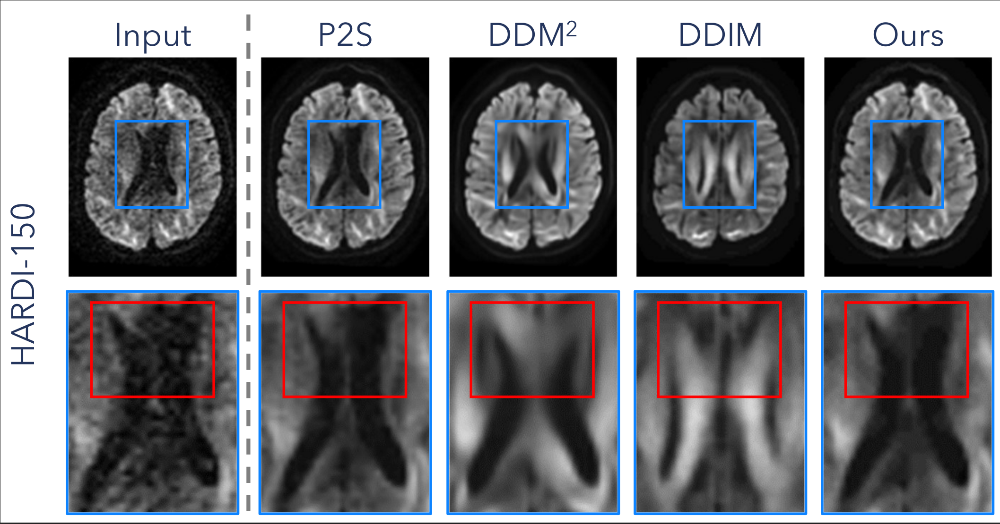
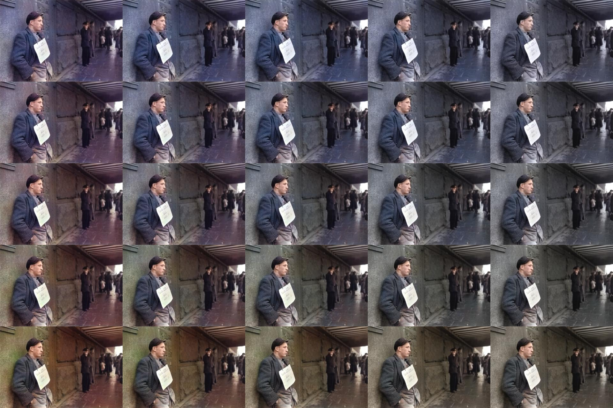

Yuexi Du
Ph.D. Candidate in Biomedical Engineering at Yale University
Multimodal learning, computer vision, and medical image analysis.
About
I am a fourth-year Ph.D. candidate in Biomedical Engineering at Yale University, advised by Prof. Nicha C. Dvornek. I also collaborate with Prof. John Onofrey.
I am currently a Ph.D. Software Engineering Intern with the GenMedia Group at Google Cloud, where I work on MLLM autorater development for video generation. Previously, I completed research internships at Microsoft Research Asia and Tencent AI Lab.
I received a bachelor's degree in Computer Science from the University of Michigan, where I worked with Prof. Andrew Owens, and a bachelor's degree in Electrical and Computer Engineering from Shanghai Jiao Tong University. My research focuses on questions with clear real-world and clinical relevance.
News
20264 updates
20255 updates
GLAM was accepted to MICCAI 2025.
Joined Microsoft Research Asia for a summer research internship with Dr. Jinglu Wang.
MaMA received Best Oral Paper Runner-up (ranked second) at IPMI 2025.
MaMA was accepted to IPMI 2025 for an oral presentation.
Two papers on rotation-equivariant convolution kernels were accepted to IEEE ISBI 2025.
20245 updates
Passed the Yale area exam and advanced to Ph.D. candidacy.
Received $800 in Yale University Conference Travel Funding.
Won first place in the MICCAI 2024 CXR-LT Challenge long-tail classification task; the team was also named the overall best-performing team and received a $900 prize.
CLEFT was accepted to MICCAI 2024 for an in-person presentation in Marrakesh.
SIFT-DBT and another paper were accepted to IEEE ISBI 2024.
20234 updates
Joined Prof. Nicha C. Dvornek's group as a Ph.D. student to work on digital breast tomosynthesis and breast cancer.
Conditional Generation of Audio from Video via Foley Analogies was accepted to CVPR 2023.
RetCCL was published in Medical Image Analysis (impact factor 10.9 at the time of the update).
Began a rotation in Prof. John Onofrey's lab to study rotation-invariant feature extraction.
20221 update
Joined Yale University as a Ph.D. student in Biomedical Engineering.
Selected Publications
Selected Projects


Experience

Google Cloud, GenMedia Group
Ph.D. Software Engineering Intern
MLLM autorater development for video generation. Mentored by Dr. Yan Xu.
Microsoft Research Asia, Media Computing Group
Research Intern
Evidence-grounded medical VQA agents. Mentored by Dr. Jinglu Wang.

Tencent AI Lab, AI Healthcare Group
Algorithm R&D Intern
Whole-slide image representation learning and retrieval. Mentored by Dr. Xiao Han and Sen Yang.
Teaching
ENAS 912
Biomedical Image Processing and Analysis
Teaching Fellow, Yale University
EECS 442
Computer Vision
Instructor Aide, University of Michigan
VR 246
Introduction to Comics & Visual Art
Teaching Assistant, SJTU UMJI
VE 101
Introduction to Computer & Programming
Teaching Assistant, SJTU UMJI
Academic Service
Reviewer for conferences and journals including CVPR, ICCV, ECCV, NeurIPS, AAAI, MICCAI, ISBI, ICLR, AISTATS, IJCAI, ICML, IEEE Transactions on Multimedia, International Journal of Computer Vision, IEEE Transactions on Pattern Analysis and Machine Intelligence, and Medical Image Analysis.